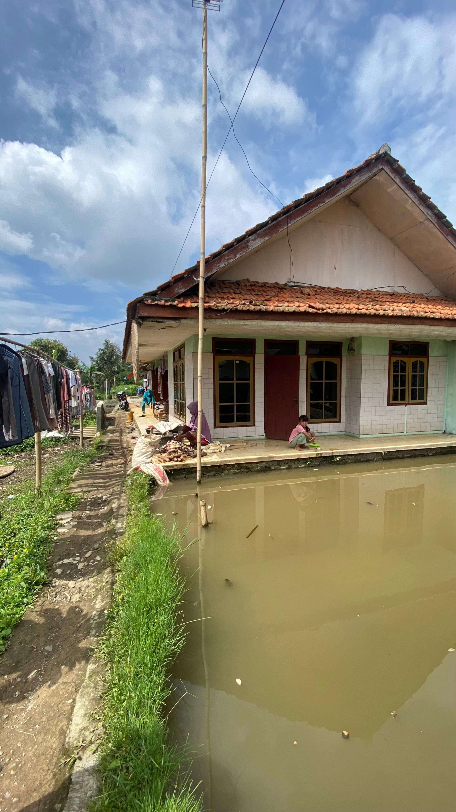

WISATA UNGGULAN
1. Ngulak Pangangonan
1. DESKRIPSI
- What (Apa)?
Ngulak Pangangonan adalah salah satu kegiatan wisata di Desa Cigalontang yang menawarkan pengalaman menarik bagi wisatawan. Di sini, anda dapat merasakan langsung aktivitas memancing sambil menikmati keindahan alam yang ada di sekeliling. Selain itu, suasana alam yang indah membuat setiap gigitan makanan di Pangangonan terasa lebih nikmat, menciptakan momen santai yang sempurna. - Where (Dimana)?
Ngulak Pangangonan terletak di Dusun 1, Desa Cigalontang, Kecamatan Cigalontang, Kabupaten Tasikmalaya. - Why (Mengapa)?
Ngulak Pangangonan menjadi salah satu destinasi wisata di Desa Cigalontang dikarenakan kegiatan ini memanfaatkan sumber daya alam buatan yang dapat menarik wisatawan untuk merasakan secara langsung aktivitas kegiatan ngulak pangangonan. - When (Kapan)?
Ngulak Pangangonan dapat dilaksanakan setiap hari. - Who (Siapa)?
Ngulak Pangangonan menjadi destinasi wisata yang dapat dikunjungi oleh wisatawan di seluruh wilayah Indonesia dan mancanegara, mulai dari orang dewasa, kalangan remaja, maupun anak-anak. - How (Bagaimana)?
Untuk menuju lokasi Ngulak Pangangonan, wisatawan dapat melalui jalur utama menggunakan kendaraan roda dua maupun roda empat.
- Merasakan eksperimen memancing di Situ Pangangonan
- Dapat berinteraksi dengan tradisi masyarakat setempat
- Mengetahui tradisi dan budaya Desa Cigalontang
- Menikmati makanan khas Desa Cigalontang
| No. | Waktu | Kegiatan |
|---|---|---|
| 1 | 08.00 - 08.15 WIB | Ticketing dan ramah tamah di Desa |
| 2 | 08.15 - 08.30 WIB | Pemberangkatan menuju Situ Pangangonan |
| 3 | 08.30 - 09.00 WIB | Briefing bersama tour guide |
| 4 | 09.00 - 12.00 WIB | Ngulak Pangangonan |
| 5 | 12.00 - Selesai | Ishoma dan Sayonara |
Paket Termasuk:
- Tiket
- Gazebo
- Narasumber
- Tour guide
- Air mineral
- Makan siang
- P3K
- Transportasi
- Alat pancing
- Obat-obatan pribadi
- Kumpul tepat waktu sesuai jam yang telah ditentukan
- Tidak membuang sampah sembarangan
- Tidak boleh membawa minuman beralkohol
- Tidak merusak alam
- Sopan santun sesuai aturan budaya masyarakat
- Tidak boleh membawa senjata tajam
- Berinteraksi baik dengan warga sekitar
- Alat pancing
- Obat-obatan pribadi
- Alat salat
- Pemesanan tiket maksimal H-1 sebelum pemberangkatan wisatawan
- Peserta dalam satu grup minimal 10 orang
- Jika jumlah wisatawan kurang dari 10 orang maka berlaku harga satu grup
- Wajib membayar DP minimal 50%
- Pembayaran dilakukan sesuai batas yang telah ditentukan; apabila melewati batas pembayaran, wisatawan dianggap melakukan pembatalan
- Tidak ada pengembalian dana bagi wisatawan yang melakukan pembatalan
-
Apakah paket ini cocok untuk perorangan?
Jawaban: Paket ini dapat dilakukan oleh perorangan tetapi dengan harga yang disesuaikan. Apabila menginginkan pembiayaan yang sesuai dengan pembiayaan rombongan, maka peserta akan diikutsertakan dengan peserta yang lain. -
Apakah paket wisata ini ramah untuk anak-anak dan keluarga?
Jawaban: Paket wisata Ngulak Pangangonan sangat ramah untuk anak-anak dan keluarga, karena kegiatan ini tidak hanya memancing, tetapi juga memungkinkan untuk piknik, menikmati keindahan alam, dan melakukan wisata edukasi. Tour guide selalu siap membantu serta memastikan keamanan dan kenyamanan selama kegiatan berlangsung. -
Apakah ada biaya tambahan yang perlu diperhatikan selain biaya paket wisata?
Jawaban: Ada biaya tambahan bagi wisatawan yang mendapatkan ikan sesuai dengan jumlah hasil tangkapannya.
2. Ngalanglang Karancagéan Domba
1. DESKRIPSI
-
What (Apa)?
Domba tangkas adalah hasil unggulan dari peternakan domba yang ada di Desa Cigalontang. Peternakan ini memberikan edukasi mengenai pemeliharaan dan perawatan yang nantinya dipilih untuk dilombakan melalui proses seleksi yang ketat. Sehingga, menghasilkan domba dengan kualitas fisik yang unggul, berbadan tegap, dan memiliki ketangkasan yang luar biasa. -
Where (Dimana)?
Kampung Cirangkong, RT 05 RW 02 Dusun 1, Desa Cigalontang, Kecamatan Cigalontang. -
Why (Mengapa)?
Domba tangkas ini dijadikan salah satu tempat wisata edukasi untuk memanfaatkan potensi serta melestarikan budaya lokal di Desa Cigalontang. -
When (Kapan)?
Pagi dan sore hari. -
Who (Siapa)?
Domba tangkas dapat dikunjungi oleh wisatawan di seluruh wilayah Indonesia dan mancanegara. Mulai dari orang dewasa, kalangan remaja, dan anak-anak. Namun, untuk anak-anak dianjurkan didampingi oleh orang dewasa. -
How (Bagaimana)?
Untuk menuju lokasi, wisatawan dapat menggunakan roda dua maupun roda empat. Akan tetapi, bagi wisatawan yang menggunakan kendaraan roda empat, perjalanan menuju lokasi ditempuh dengan berjalan kaki karena akses jalan belum dapat dilalui oleh kendaraan roda empat.
- Melihat dan merasakan langsung tata cara pemeliharaan domba tangkas
- Melihat pertunjukan acara ngaben (laga ketangkasan domba) setiap dua bulan sekali
- Merasakan keindahan alam dan lingkungan sekitar
- Dapat berinteraksi dengan tradisi masyarakat setempat
- Mengetahui tradisi dan budaya Desa Cigalontang
| No. | Waktu | Kegiatan |
|---|---|---|
| 1 | 08.00 - 08.30 WIB | Ticketing dan ramah tamah di Desa |
| 2 | 08.30 - 08.40 WIB | Pemberangkatan menuju Ngalanglang Karancagéan Domba |
| 3 | 08.40 - 09.00 WIB | Briefing bersama tour guide |
| 4 | 09.00 - 10.00 WIB | Ngalanglang Karancagéan Domba |
| 5 | 10.00 - 10.30 WIB | Sayonara |
Paket Termasuk:
- Tiket, parkir, dan makan
- Narasumber
- Tour guide
- Air mineral
- Pakan kambing
- Kumpul tepat waktu sesuai jam yang telah ditentukan
- Tidak membuang sampah sembarangan
- Tidak boleh membawa minuman beralkohol
- Tidak merusak alam
- Sopan santun sesuai aturan budaya masyarakat
- Tidak boleh membawa senjata tajam
- Berinteraksi baik dengan warga sekitar
- Obat-obatan pribadi
- Alat salat
- Pemesanan tiket maksimal H-1 sebelum pemberangkatan wisatawan
- Peserta dalam satu grup minimal 10 orang
- Jika jumlah wisatawan kurang dari 10 orang maka berlaku harga satu grup
- Wajib membayar DP minimal 50%
- Pembayaran dilakukan sesuai batas yang telah ditentukan, apabila melewati batas pembayaran maka wisatawan dianggap melakukan pembatalan
- Tidak ada pengembalian dana bagi wisatawan yang melakukan pembatalan
- Apakah paket ini cocok untuk perorangan?
Jawaban: Paket ini dapat dilakukan oleh perorangan tetapi dengan harga yang disesuaikan, apabila menginginkan pembiayaan yang sesuai dengan pembiayaan rombongan maka diikutsertakan dengan peserta yang lain. - Apakah paket wisata ini ramah untuk anak-anak dan keluarga?
Jawaban: Paket wisata Ngalanglang Karancagean Domba sangat ramah untuk anak-anak dan keluarga karena kegiatan ini tidak hanya melihat domba, tetapi juga dapat mengetahui penjelasan mengenai domba tangkas, menikmati keindahan alam, dan wisata edukasi. Tour guide juga selalu siap membantu dan memastikan keamanan serta kenyamanan selama kegiatan berlangsung. - Apakah ada biaya tambahan yang perlu diperhatikan selain biaya paket wisata?
Jawaban: Tidak ada biaya tambahan.
3. Ngadéndang Rasa

1. DESKRIPSI
- What (Apa)?
Jaipong merupakan salah satu budaya tradisional khas Sunda, yang memadukan tarian, musik, dan nyanyian. Kesenian ini biasanya berisi gerakan tarian yang anggun, iringan musik tradisional seperti gamelan, kendang, suling, dan rebab, serta nyanyian dengan lirik yang sarat makna budaya. - Where (Dimana)?
Jaipong ini dilaksanakan di Kampung Babakan Hamami RT 15 RW 06, Dusun 3, Desa Cigalontang, Kecamatan Cigalontang, Kabupaten Tasikmalaya. - Why (Mengapa)?
Jaipong menjadi sebuah budaya masyarakat yang sangat penting untuk dilestarikan. Selain itu, wisatawan dapat mempelajari budaya masyarakat di Desa Cigalontang dan bisa mempelajari tarian maupun alat musik yang digunakan. - When (Kapan)?
Kegiatan Jaipongan dilaksanakan rutin setiap satu minggu sekali pada sabtu malam. - Who (Siapa)?
Ronggeng menjadi objek wisata budaya yang dapat dikunjungi oleh wisatawan di seluruh wilayah Indonesia maupun mancanegara mulai dari orang dewasa, kalangan remaja, dan anak-anak. - How (Bagaimana)?
Untuk menuju lokasi Jaipongan, wisatawan dapat menggunakan roda dua maupun roda empat, akan tetapi, bagi wisatawan yang menggunakan kendaraan roda empat, untuk menuju lokasi dapat ditempuh dengan berjalan kaki karena akses jalan yang belum dapat dilalui oleh kendaraan roda empat.
- Merasakan pengalaman jaipongan dan memainkan alat musik tradisional
- Mengetahui tradisi dan budaya Desa Cigalontang
- Dapat berinteraksi dengan tradisi masyarakat setempat
| No. | Waktu | Kegiatan |
|---|---|---|
| 1 | 15.45 - 16.00 WIB | Check in home stay |
| 2 | 16.00 - 18.00 WIB | Ishoma |
| 3 | 18.00 - 19.30 WIB | Ticketing dan ramah tamah di Desa |
| 4 | 19.30 - 20.00 WIB | Briefing Bersama tour guide |
| 5 | 20.00 - 00.00 WIB | Ngadéndang Rasa |
| 6 | 00.00 - 07.00 WIB | Istirahat |
| 7 | 07.00 - 07.30 WIB | Sarapan pagi |
| 8 | 07.30 - 08.00 WIB | Sayonara |
Paket termasuk:
- Tiket
- Narasumber
- Tour guide
- Air mineral
- Sarapan pagi
- P3K
- Transportasi
- Obat-obatan pribadi
- Alat salat
- Baju ganti
- Kumpul tepat waktu sesuai jam yang telah ditentukan
- Tidak membuang sampah sembarangan
- Tidak boleh membawa minuman beralkohol
- Tidak merusak alam
- Sopan santun sesuai aturan budaya masyarakat
- Tidak boleh membawa senjata tajam
- Berinteraksi baik dengan warga sekitar
- Obat-obatan pribadi
- Alat salat
- Baju ganti
- Pemesanan tiket maksimal H-1 sebelum pemberangkatan wisatawan
- Peserta dalam satu grup minimal 10 orang
- Jika jumlah wisatawan kurang dari 10 orang maka berlaku harga satu grup
- Wajib membayar DP minimal 50%
- Pembayaran dilakukan sesuai batas yang telah ditentukan, apabila melewati batas pembayaran maka wisatawan dianggap melakukan pembatalan
- Tidak ada pengembalian dana bagi wisatawan yang melakukan pembatalan
-
Apakah paket ini cocok untuk perorangan?
Jawaban: Paket ini dapat dilakukan oleh perorangan tetapi dengan harga yang disesuaikan, apabila menginginkan pembiayaan yang sesuai dengan pembiayaan rombongan maka diikutsertakan dengan peserta yang lain. -
Apakah paket wisata ini cocok untuk anak-anak dan keluarga?
Jawaban: Paket wisata ini cocok untuk anak-anak dan keluarga karena akan memberikan edukasi mengenai tarian dan alat musik tradisional, namun harus berada di dalam pengawasan pemandu wisata.
4. Sérén Manis
1. DESKRIPSI
- Apa? Wajit Mak Eroh merupakan salah satu UMKM khas Priangan yang memberikan edukasi pada wisatawan mengenai pembuatan wajit. Produk unggulannya meliputi tiga varian wajit: wajit ketan, angleng, dan wajit singkong.
- Dimana? Wajit Mak Eroh terletak di Kampung Panyandungan, Dusun 2, Desa Cigalontang, Kabupaten Tasikmalaya.
- Mengapa? Wajit Mak Eroh dijadikan sebagai salah satu destinasi wisata, dikarenakan selain wisatawan dapat mencicipi Wajit Mak Eroh, wisatawan juga mendapatkan edukasi mengenai pembuatan wajit.
- Kapan? Produksi Wajit Mak Eroh dibuat setiap hari tetapi, disesuaikan dengan pesanan konsumen.
- Siapa? Wajit Mak Eroh ini dapat dikunjungi oleh wisatawan diseluruh wilayah Indonesia dan Mancanegara. Mulai dari orang dewasa, kalangan remaja, dan anak-anak.
- Bagaimana? Untuk menuju lokasi Wajit Mak Eroh, wisatawan dapat menggunakan kendaraan roda dua maupun roda empat akan tetapi, untuk menuju rumah produksi wisatawan dapat mengaksesnya dengan berjalan kaki.
- Mengetahui makanan tradisional Desa Cigalontang Anda dapat mengetahui lebih lanjut tentang makanan tradisional Desa Cigalontang dan bagaimana cara membuatnya.
- Mengetahui tradisi dan budaya Desa Cigalontang Anda dapat mempelajari tentang tradisi dan budaya Desa Cigalontang yang unik dan khas.
- Mengetahui cara pembuatan wajit Anda dapat mengetahui cara pembuatan wajit secara langsung dari pengrajin yang berpengalaman.
- Mencicipi wajit secara langsung Anda dapat mencicipi wajit secara langsung dan merasakan kelezatan dan keunikan rasa wajit.
- Membawa pengalaman baru yang tidak ada di tempat lain Anda dapat membawa pengalaman baru dan unik yang tidak dapat ditemukan di tempat lain.
| No. | Waktu | Kegiatan |
|---|---|---|
| 1 | 08.00 - 08.30 WIB | Ticketing dan ramah tamah di Desa |
| 2 | 08.30 - 08.45 WIB | Pemberangkatan menuju Wajit Mak Eroh |
| 3 | 08.45 - 09.00 WIB | Briefing bersama tour guide |
| 4 | 09.00 - 13.00 WIB | Kegiatan Sérén Manis |
| 5 | 13.00 - 14.00 WIB | Ngadéndang Rasa |
Paket Termasuk:
- Tiket
- Narasumber
- Tour guide
- Transportasi
- P3K
- Air mineral
- Makan siang
- Wajit yang dicicipi
- Wajit yang dibawa
- Kumpul tepat waktu sesuai jam yang telah ditentukan
- Tidak membuang sampah sembarangan
- Tidak boleh membawa minuman beralkohol
- Tidak merusak alam
- Sopan santun sesuai aturan budaya masyarakat
- Tidak boleh membawa senjata tajam
- Berinteraksi baik dengan warga sekitar
- Obat-obatan pribadi
- Alat salat
- Pemesanan tiket minimal H-3 sebelum pemberangkatan wisatawan
- Peserta dalam satu grup minimal 10 orang
- Jika jumlah wisatawan kurang dari 10 orang maka berlaku harga satu grup
- Wajib membayar DP minimal 50%
- Pembayaran dilakukan sesuai batas yang telah ditentukan apabila, melewati batas pembayaran maka wisatawan dianggap melakukan pembatalan
- Tidak ada pengembalian dana bagi wisatawan yang melakukan pembatalan
- Apakah paket ini cocok untuk perorangan?
Jawaban: Paket ini dapat dilakukan oleh perorangan tetapi dengan harga yang di sesuaikan, apabila menginginkan pembiayaan yang sesuai dengan pembiayaan rombongan maka di ikut sertakan dengan peserta yang lain.
- Apakah paket wisata ini ramah untuk anak-anak dan keluarga?
Jawaban: Paket wisata ini cocok untuk anak-anak dan keluarga karena akan memberikan edukasi mengenai cara pembuatan wajit. Akan tetapi harus berada di dalam pengawasan.
WISATA RINTISAN
1. Bukit Pilar

Bukit Pilar adalah salah satu destinasi wisata alam yang terletak di Kecamatan Cigalontang, Kabupaten Tasikmalaya,
Jawa Barat. Tempat ini dikenal dengan pemandangannya yang indah dan suasana alam yang asri, menjadikannya tujuan
favorit bagi pecinta alam dan wisatawan lokal. Bukit ini berada di ketinggian 1270 MDPL yang memberikan panorama
luas dengan latar pegunungan, hamparan sawah, dan perkampungan khas pedesaan.
2. Sanggar Seni Pancawarna

Sanggar Seni Pancawarna, yang didirikan pada tahun 1980-an oleh Pak Saca Mulyana,
merupakan pusat pelestarian seni budaya khas Sunda yang berlokasi di Dusun 1, Desa Cigalontang,
Kecamatan Cigalontang. Bertempat di balai sawala sebagai pusat latihan secara rutin, menjadi
titik kumpul bagi masyarakat yang ingin belajar dan melestarikan tradisi lokal. Sanggar ini
menghidupkan kembali berbagai kesenian tradisional, seperti degung klasik, jaipong, silat dengan
gerakan khas seperti parepet, tapak 2, dan tapak 3, serta musik Sunda dengan alat seperti kecapi,
suling, kendang, saron, bonang, dan gong.
Dengan kegiatan rutin yang dilaksanakan setiap malam Sabtu, Sanggar Seni Pancawarna tidak hanya
menjadi ruang untuk belajar seni, tetapi juga berperan sebagai penjaga identitas budaya desa.
Meski menghadapi tantangan modernisasi, sanggar ini tetap eksis melalui kontribusinya dalam
berbagai acara adat, undangan budaya, dan kegiatan pelestarian seni lainnya. Didukung oleh
legalitas resmi dari pemerintah Kabupaten Tasikmalaya, Sanggar Seni Pancawarna menjadi simbol
kebanggaan warga lokal, menawarkan pengalaman autentik bagi pengunjung desa wisata.
3. Keripik Singkong Arneta
Keripik Singkong Arneta adalah UMKM khas Desa Cigalontang, Kabupaten Tasikmalaya, yang didirikan sejak 2019. Usaha ini memproduksi keripik singkong berbentuk pipih memanjang dengan cita rasa original menggunakan singkong berkualitas dari petani lokal. Proses produksi yang masih manual mampu menghasilkan lebih dari 2 kuintal per hari. Produk ini telah dipasarkan ke berbagai daerah seperti Lembang, Bandung, dan Kota Tasikmalaya melalui kerja sama dengan toko oleh-oleh. Berlokasi di Kp. Babakan Hamami, Desa Cigalontang, UMKM ini memanfaatkan potensi sumber daya alam lokal untuk terus berkembang.
4. FARMER’S COFFEE CIGALONTANG

Farmer’s Coffee Cigalontang adalah produk UMKM unggulan dari Desa Cigalontang, Kabupaten Tasikmalaya, yang dihasilkan dari biji kopi pilihan hasil budidaya ramah lingkungan oleh petani lokal. Diproses secara tradisional namun tetap menjaga kualitas modern, kopi ini menawarkan cita rasa khas dan autentik dalam berbagai varian, seperti bubuk kopi dan kopi siap seduh, termasuk kopi Arabica dengan rasa keasaman ringan, manis alami, aroma floral, dan rasa akhir lembut bernuansa kacang-cokelat dalam varian natural, honey, dan wine, serta kopi Robusta dengan karakter tebal, pahit, dan sentuhan earthy-nutty. Produk ini tidak hanya menjadi kebanggaan daerah, tetapi juga mendukung pemberdayaan ekonomi petani lokal dan keberlanjutan UMKM. Farmer’s Coffee Cigalontang telah dipasarkan di tingkat regional, nasional, dan global, termasuk ekspor ke Swiss, Dubai, Malaysia, dan Thailand, serta tersedia di berbagai wilayah Indonesia seperti Jakarta, Sumatra, dan Kalimantan, dengan harga yang kompetitif dan fleksibel untuk grosir atau reseller.
5. PABENTANG (Pandai Besi Cigalontang)

PABENTANG (Pandai Besi Cigalontang) adalah UMKM yang berada di Kp. Babakan Kiara RT 21 RW 008, Desa Cigalontang, Kecamatan Cigalontang, Kabupaten Tasikmalaya. PABENTANG memproduksi alat perkakas seperti golok, parang, kapak, cangkul, pisau, dan alat-alat lainnya termasuk pesanan khusus sesuai kebutuhan konsumen. Berakar dari tradisi turun-temurun, produk ini dibuat secara manual dengan teknik tradisional menggunakan baja berkualitas tanpa campuran. Meski pemasaran utamanya melalui kunjungan langsung atau pesanan pribadi, produk PABENTANG telah menjangkau luar kota hingga luar pulau.
6. Pengrajin Anyaman Ki Amar

Anyaman Ki Amar adalah usaha kerajinan tangan yang menghasilkan produk berbahan dasar bambu, seperti boboko (tempat nasi/makanan), dudukuy (penutup kepala), dan aseupan (wadah untuk mengukus makanan). Proses pembuatan dimulai dengan pemilihan bambu berkualitas, yang dijemur dan diolah dengan teknik diwengkung dan diraut. Usaha ini dikelola oleh Pak Amar (87 tahun) dan istrinya (74 tahun) di Kampung Paniis, Desa Cigalontang, Kecamatan Cigalontang, Kabupaten Tasikmalaya. Lokasi usaha ini memanfaatkan sumber daya alam bambu. Produksi Anyaman ini telah dilaksanakan selama bertahun-tahun, menghasilkan produk yang tidak hanya memenuhi kebutuhan praktis tetapi juga melestarikan tradisi lokal.
7. Gula Aren Pak Sarim

Gula Aren Pak Sarim adalah produk unggulan asli dari Desa Cigalontang, Kecamatan Cigalontang, Kabupaten Tasikmalaya, yang diproduksi secara tradisional menggunakan nira terbaik dari pohon aren pilihan. Dengan rasa manis alami, warna cokelat keemasan, dan aroma harum khas, gula ini menjadi solusi sempurna untuk kebutuhan dapur sehari-hari maupun bahan baku kuliner. Diproduksi dengan cetakan tradisional, gula ini mempertahankan keasliannya, menjadikannya pilihan tepat untuk masakan atau minuman tradisional. Untuk pemasaran, produk ini melayani warga lokal untuk kebutuhan sehari-hari.
8. Pembuatan Sarung Golok

Pembuatan Sarung Golok Pak Engkus adalah usaha kerajinan tangan yang mengkhususkan pada pembuatan sarung golok dan pegangan perkakas lainnya, menggunakan bahan kayu mahoni berkualitas. Setiap produk dibuat dengan desain polosan atau ukiran yang dapat disesuaikan dengan permintaan pelanggan, dengan waktu produksi satu hingga tiga hari, dengan pertimbangan tingkat kesulitan ukiran. Selain sarung golok, Pak Engkus juga memproduksi pegangan untuk golok, parang, pisau, dan alat perkakas lainnya. Usaha ini berlokasi di Kampung Paniis, Desa Cigalontang, Kecamatan Cigalontang, Kabupaten Tasikmalaya.
9. Gula Aren Bu Popong

Gula Aren adalah produk unggulan yang dihasilkan oleh Bu Popong di Kampung Paniis, Tasikmalaya. Usaha ini fokus pada produksi gula aren berkualitas tinggi dengan metode tradisional yang menjaga keaslian dan cita rasa alami. Bu Popong mengelola usaha dengan kapasitas produksi bervariasi antara 3 hingga 15 toros per hari, menghasilkan gula aren berkualitas dengan warna emas cerah, tekstur lembut, dan rasa manis yang khas. Produk ini dikenal aman dikonsumsi karena tidak menggunakan bahan kimia pengawet atau pewarna, memiliki masa simpan yang cukup lama, dan tekstur keras yang tidak mudah basah. Berlokasi di Kampung Paniis RT/RW 13/05, Desa Cigalontang, Kecamatan Cigalontang, Kabupaten Tasikmalaya, usaha ini memanfaatkan lingkungan pedesaan yang kaya akan sumber daya alam dengan keberadaan pohon aren di sekitarnya, mendukung produksi gula aren berkualitas tinggi. Dengan komitmen terhadap kualitas, metode produksi tradisional, dan inovasi dalam pengolahan serta pemasaran, Bu Popong terus berupaya menjaga warisan kuliner lokal sambil memenuhi kebutuhan pasar modern.
10. Pengolahan Ketan Hitam 1

Pabrik beras ketan hitam di Desa Cigalontang merupakan pusat pengolahan yang melayani kebutuhan pasar lokal dan regional dengan mengolah padi ketan hitam, sebagian besar dipasok oleh petani sekitar. Produksi dilakukan setiap enam bulan sekali melalui proses bertahap, mulai dari penyortiran padi, pengeringan, penggilingan, hingga pengemasan sesuai kebutuhan pasar. Beras ketan hitam yang dihasilkan memiliki ciri khas warna hitam pekat yang berubah menjadi ungu saat dimasak, kaya akan pigmen antosianin sebagai antioksidan, dan mengandung nutrisi penting seperti karbohidrat, protein, serat, serta zat besi yang mendukung kesehatan. Selain memenuhi kebutuhan pasar di daerah seperti Garut dan Bandung, pabrik ini juga melayani warga lokal untuk kebutuhan sehari-hari. Dengan mempekerjakan penduduk setempat, pabrik ini tidak hanya memberikan lapangan kerja tetapi juga meningkatkan nilai tambah hasil pertanian lokal dan mendukung perekonomian desa melalui rantai pasok beras ketan hitam yang berkelanjutan.
11. Pengolahan Ketan Hitam 2
Beras ketan hitam dari Cigalontang, Kabupaten Tasikmalaya, adalah salah satu hasil pertanian unggulan daerah yang memiliki kualitas tinggi dan cita rasa khas. Beras ini diminati karena teksturnya yang pulen, aroma harum, dan manfaat kesehatan yang melimpah. Produk ini telah dikenal luas, baik untuk kebutuhan rumah tangga maupun industri kuliner, dan sering dipasarkan ke kota-kota besar seperti Bandung dan Jakarta, serta dijual di pasar tradisional lokal. Keberadaan beras ketan hitam di Cigalontang tidak hanya memberikan nilai ekonomi bagi masyarakat, tetapi juga menjadi simbol keunggulan pertanian lokal yang mencerminkan kearifan budaya setempat.
12. Kebul Solder (Peternakan Domba Tangkas)
Kebul Solder merupakan peternakan Domba Tangkas milik Pak Ade yang berlokasi di Kampung Paniis RT 15 RW 03, Desa Cigalontang, Kecamatan Cigalontang, Kabupaten Tasikmalaya. Domba-domba ini tidak hanya dijual kepada peternak yang ingin mengembangkan usaha ternaknya, tetapi juga dilatih untuk berkompetisi dalam berbagai lomba adu ketangkasan.
13. Pengolahan Rangining

Pengolahan Rangining adalah usaha UMKM yang memproduksi camilan tradisional khas Kecamatan Cigalontang, Kabupaten Tasikmalaya, seperti Rangining (dari tepung beras), Ranginang (dari ketan), Ro (dari singkong), dan Kemplang. Proses produksi melibatkan pengolahan bahan dasar seperti beras, ketan, atau singkong yang diparut, difermentasi, digiling menjadi tepung, diadon, dicetak, dan didiamkan selama sehari penuh untuk memastikan kualitas. Produk ini sering dijadikan oleh-oleh dan dipasarkan di kota-kota besar seperti Jakarta dan Bandung. Usaha ini berlokasi di Kp. Ciparu, Desa Cigalontang, Kecamatan Cigalontang, Kabupaten Tasikmalaya, dan dikelola oleh Suhara.
14. Pembuatan Anyaman Ibu Tatih

Anyaman Ibu Tatih, yang berdiri sejak 1980-an di Kp. Cipari, Cigalontang, merupakan salah satu usaha tradisional yang berhasil mempertahankan eksistensinya hingga kini. Mengedepankan kualitas dengan bambu pilihan dan teknik anyaman rapi, produk ini mencerminkan nilai budaya khas Cigalontang. Berbagai produk unggulan dihasilkan, seperti dudukuy (topi petani), nyiru (alat penampi beras), aseupan (kukusan nasi), dan tolombong (keranjang tradisional). Proses produksinya memanfaatkan bahan baku lokal yang diolah secara manual dengan teknik yang diwariskan secara turun-temurun. Dengan kapasitas produksi hingga 5 kodi untuk pesanan besar, produk-produk ini dipasarkan langsung di tempat, di pasar tradisional seperti Pasar Cikurubuk dan Singaparna, serta melalui pesanan besar. Lebih dari sekadar barang fungsional, anyaman Ibu Tatih menjadi simbol seni dan kearifan lokal yang terus hidup dari generasi ke generasi.
15. Gula Aren Pak Yoyo

Gula Aren Pak Yoyo adalah salah satu UMKM yang memfokuskan pada produksi gula aren berkualitas dengan metode tradisional yang menjaga keaslian gula aren tersebut. Gula aren Pak Yoyo diproduksi secara alami tanpa bahan tambahan kimia sehingga menghasilkan cita rasa manis yang khas dan aroma harum alami. Produksi gula aren ini berada di Dusun 1, Kampung cigalontang, RT/RW 03/02 , Desa Cigalontang, Kecamatan Cigalontang. Untuk pemasaran gula aren Pak Yoyo, dibeli oleh pengepul atau pesanan pribadi untuk dikonsumsi rumah tangga atau usaha kecil.